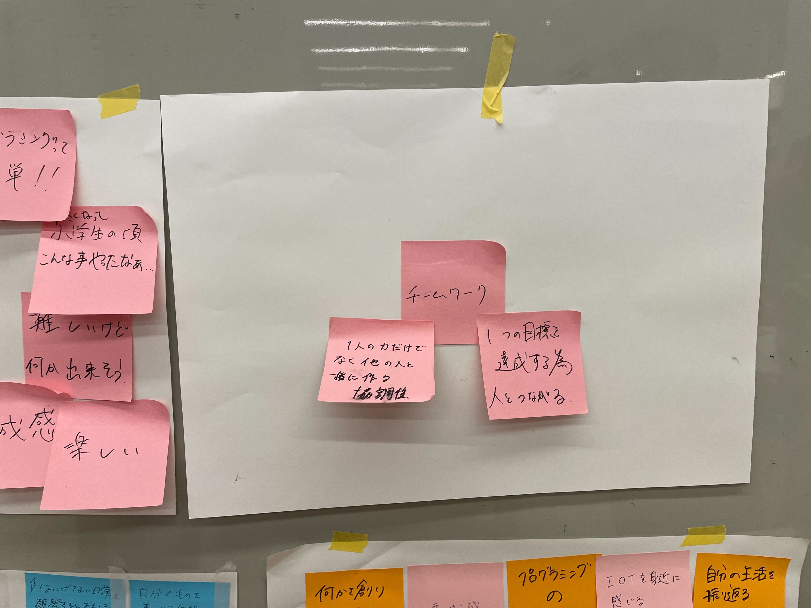
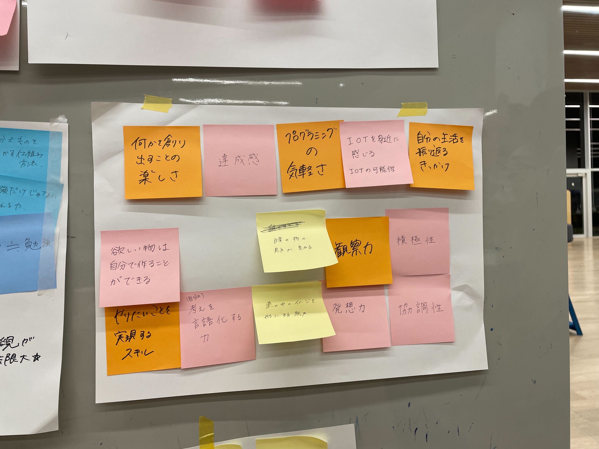
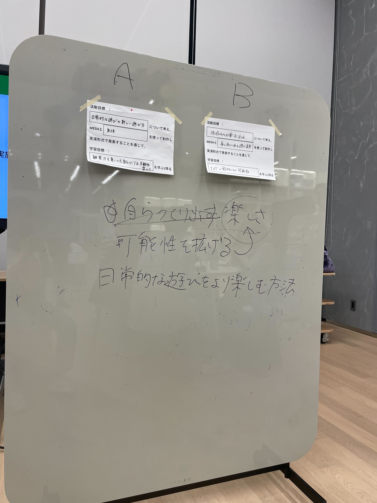

MESHを使用して行うワークショップに向けての準備段階
グループでMESHを使って色々な活用方法を考えた。
眼鏡に振動センサーのMESHを用いてつけたときの振動でウルトラマンに変身できるようにした
ぷーさんの写真の前を通った時に、「いってらっしゃい」が流れるようにした
8月3日に行われるワークショップに向けての活動目標、学習目標を設定した。
活動目標「日常的な遊びをより楽しむ方法について考え、MESHと○○を使って制作し実演形式で発表することを通じて、」
可能性を拡げる楽しさを学ぶ/得る
  